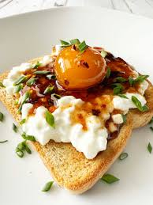

Hot Honey Cured Yolks

Chef John's cured egg yolks, presented 3 different ways, are the delicious result of an experiment you really should try. Surprisingly easy, too—you only need a few ingredients and curing time to create these luxuriously jammy egg yolks. You may find it difficult to decide which one you like the most.
Ingredients
- 1/2 cup honey
- 4 large egg yolks
- 1/4 teaspoon cayenne pepper
- g1/2 teaspoon fresh thyme leaves
Steps
- For hot honey cured egg yolks: Transfer a few tablespoons honey into the bottom of a wide jar with a lid. Place in the yolks, and sprinkle tops with cayenne and thyme. Drizzle remaining honey over the top, adding more if necessary to just cover the yolks. Cover and transfer to the fridge until the yolks reach your desired firmness, 2 to 4 days. Serve on buttered toast, topped with the hot honey syrup and a sprinkling of flaky salt.
- Cover and place back in the preheated oven until yolks are just set, and spring back to the touch, 45 minutes to 1 hour or more. Yolks can be cooked softer or firmer depending on preference. Oven time will vary greatly depending on the oven, temperature of the yolks, and size and shape of the baking dish, so be sure to check them often so they don’t cook longer than you want. Use the garlic butter to soak toasted or grilled bread, and top with the yolk. These are great topped with Parmesan cheese, sea salt, black pepper, and chopped Italian parsley.
Home